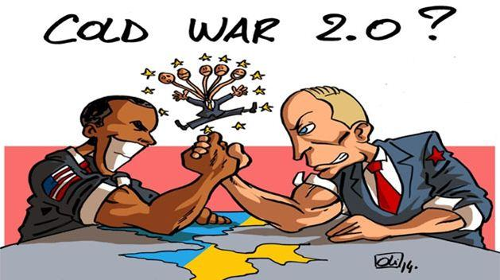

Maïdan : les dérives d’une « révolution » anti-russe
par Jean GERONIMO
« Je pense que ce sont les Etats-Unis qui ont semé la pagaille. Ils se servent des contradictions, des bras-de-fer, ils interviennent et exacerbent des conflits »
Mikhaïl Gorbatchev,
Moscou, 11 02 2016
Le spectaculaire recul européen du président ukrainien Viktor Ianoukovitch a été, pour Washington, le prétexte de son renversement en vue du contrôle d’un État stratégique de l’Eurasie post-communiste. Selon l’affirmation du 24 mai 2016 du chef de la diplomatie russe, S. Lavrov, ce putsch concrétise le « point culminant » de l’offensive géopolitique américaine et, surtout – selon moi –, son vieux rêve obsessionnel de la Guerre froide : le reflux de la puissance russe dans son espace historique.
Contrairement à la propagande médiatique visant à formater l’opinion publique internationale, Ianoukovitch n'a jamais remis en cause le rapprochement poursuivi sous sa présidence de l'Ukraine avec l'UE. Il a plutôt cherché à rééquilibrer sa position entre l'Europe et la Russie, jusque-là tournée vers le « rêve européen ».
Dans ce but, il a voulu renégocié – de façon maladroite – l’Accord d’association et de libre-échange programmé le 23 11 2013 entre l’UE et l’Ukraine, car guère adapté à la situation désastreuse de son économie, tout en occultant ses liens étroits avec la Russie – qui contrôlait alors le tiers de son capital.
Suite à une prise de conscience tardive et aux alléchantes propositions russes du 17 12 2013 – prêt de 15 milliards de dollars et réduction d'un tiers du prix du gaz – ce brusque revirement a achevé de décrédibiliser le « corrompu » Ianoukovitch, dont Poutine a d’ailleurs regretté la faiblesse. Ainsi est née la « révolution » du Maïdan.
Nous allons donc nous interroger sur la nature de cette « révolution » sanctionnée par l'éviction de V. Ianoukovitch, au lendemain de l’accord (pourtant) consensuel du 21 février 2014 entre les acteurs en conflit et dont le respect aurait pu, en définitive, éviter la sanglante guerre civile en cours dans le Sud-est – en dépit des trêves successives, débouchant sur le double accord de Minsk des 5 septembre 2014 et 12 février 2015. En 2016, le processus de Minsk a débouché sur un « conflit gelé », ancré dans une trêve fragile et dont l’enjeu final est l’octroi, via une réforme constitutionnelle décentralisatrice, d’une forme d’autonomie aux régions rebelles du Donbass
Un putsch nationaliste fascisant, aiguillé par l’Occident
C'est sur la base de la violation de l’accord du 21 février, à la suite d'une douteuse « situation insurrectionnelle » – selon le terme de Jacques Sapir – organisée par des forces obscures sous bienveillance occidentale, que sera construit le samedi 22 février 2014 le coup d'Etat contre Ianoukovitch. A ce jour, l’ONU – à l’instar du Conseil de l’Europe – dénonce le retard anormal de la justice sur les dérives meurtrières à Kiev et Odessa de ce putsch nationaliste, nourri de l’idéologie de Bandera1 et précipité par les forces fascisantes – voire « carrément nazies », selon J.M. Chauvier. Pour V. Poutine, les auteurs et le scénario de ce putsch sont parfaitement connus aujourd’hui : on sait « combien ils ont été payés, comment ils ont été préparés, sur quels territoires, dans quels pays, (et) qui étaient leurs instructeurs »2. Ce putsch sera, après une courte transition politique, la condition permissive du couronnement présidentiel de P. Porochenko le 25 mai 2014, candidat pro-européen le plus apte à défendre les intérêts de l’administration américaine, du grand capital et des oligarques rentiers de l’Ouest ukrainien contre le « danger communiste ». Le rêve européen, sous verrou américain.
A terme, cette inflexion pro-européenne de l’Ukraine sera le catalyseur de son rapprochement avec l’OTAN, véritable relais de la diplomatie américaine, comme l’avait anticipé Zbigniew Brzezinski : « L’élargissement de l’Europe et de l’OTAN serviront les objectifs aussi bien à court terme qu’à plus long terme de la politique américaine »3. Dans cette optique, sous pression américaine, Porochenko construira sa popularité – et sa stratégie – contre la « menace russe ». Le 14 septembre 2015, il confirme que la « menace numéro un est la Russie »4 et, par ce biais, justifie son appel à l’OTAN. Structurellement imprégnée depuis la Guerre froide, par la doctrine Brzezinski5 prônant le reflux de la puissance russe, l’administration américaine peut avancer ses pions – et ses bases – sur l’Echiquier eurasien.
L’objectif de Washington en Ukraine est d’empêcher le retour de l’influence russe en Europe et, surtout, de s’opposer à ses velléités de domination – qui, de facto, remettraient en cause son leadership hérité de la lutte anti-communiste. Ce principe de veille stratégique sur le continent européen a été souligné par H. Kissinger comme un élément clé de la politique américaine : « Depuis que l’Amérique s’est engagée dans la Première Guerre mondiale, en 1917, sa politique repose sur l’idée qu’il est de son intérêt géopolitique d’empêcher toute puissance potentiellement hostile de dominer l’Europe »6. Cette préoccupation stratégique, au cœur de l’analyse de Brzezinski, justifie le maintien d’une atmosphère de Guerre froide réactivant – via une stratégie de désinformation – le mythe de « l’ennemi russe » en Ukraine. Elle explique le soutien américain à l’extension vers l’Est de l’espace néo-libéral européen et son intégration au bloc otanien, contre les intérêts russes. Au final, elle explique la détermination du commandant des forces alliées en Europe, Philip Breedlove, exprimée devant le Congrès américain en février 2016, à « contenir » la Russie et si besoin, à la « vaincre ». Inquiétant.
Elargie à l’ancienne zone soviétique, l’Europe reste donc la chasse gardée de la puissance américaine et la pierre angulaire de sa stratégie anti-russe. Avec, en point de mire, le contrôle de l’Ukraine – via un putsch « révolutionnaire ».
Une « révolution » anti-communiste, détournée contre Moscou
L’élimination politique d’un dirigeant pro-russe démocratiquement élu mais gênant, dans la mesure où il rejetait d’une part, la logique ultralibérale de l’Accord d’association et d’autre part, l’emprise excessive de l'austérité européenne sous contrôle du FMI, a été l’objectif fédérateur de la coalition anti-Ianoukovitch. A la base très hétérogène et formée d’opposants nationalistes – issus, en partie, de courants néo-nazis –, cette étrange coalition « révolutionnaire » a été in fine, soutenue puis aiguillée par les puissances occidentales sous impulsion américaine. « Washington a activement soutenu le Maïdan » a déploré Vladimir Poutine, le 16 octobre 20147 – hypothèse confirmée par l’aveu du 31 01 2015 de Barak Obama sur la chaine CNN. Progressivement, poussée par une force irrésistible, cette curieuse « révolution » national-libérale de l’Euromaïdan s’est radicalisée, avec une chasse aux « ennemis » – russes et communistes – et des dérives politiques débouchant, à partir du 15 avril 2014, sur une terrible répression dans l’Est – avec, le 2 mai 2014, le honteux massacre d’Odessa. Une conséquence ultime de cette évolution a été l’émergence de lois de « décommunisation », conduisant à l’interdiction du Parti communiste ukrainien le 24 juillet 2015 et, par ricochet, à la sacralisation des vieux héros nationalistes collaborationnistes liés à la Waffen SS. Troublante révision de l’histoire ukrainienne, favorisant la renaissance d’idéologies nazies portées par de redoutables groupes para-militaires. Choquant.
Tendanciellement, la « révolution » kiévienne s’inscrit dans le prolongement des « révolutions colorées » de nature néo-libérale, ciblant l’espace post-soviétique dans les années 2000 et visant à installer des dirigeants pro-occidentaux proches de Washington, donc facilement manipulables. La généralisation inconsciente de ce type de stratégie « révolutionnaire » au Moyen-Orient a été dénoncée le 20 décembre 2015 par Jeffrey Sachs, conseiller spécial du secrétariat général de l’ONU : « (…) les Etats-Unis doivent cesser les opérations secrètes de la CIA visant à renverser ou à déstabiliser les gouvernements dans différents points du globe. »8 Le déroulement du scénario ukrainien donne l'impression d'une mécanique politique parfaitement huilée, sous l'œil avisé de l'ambassade américaine – superviseur de la progression « révolutionnaire ».
Le rôle des organisations gouvernementales et non gouvernementales étrangères, ainsi que l’ingérence surprenante des dirigeants occidentaux (J. Kerry et C. Ashton) ont été, une fois de plus, décisifs – avec les obscurs snipers du Maïdan – dans la construction du « point critique » provoquant la déstabilisation du pouvoir et la réussite finale de cette mise en scène révolutionnaire. Il ne fait plus aucun doute aujourd’hui que ces snipers sont liés à l’opposition radicale anti-Ianoukovitch et ont été intégrés – avec les milices brunes – dans la stratégie de déstabilisation du régime pro-russe. Avec, aussi, une pression « démocratique » anti-russe impulsée par le duo NEID-USAID9 – vecteur de toutes les « révolutions » post-soviétiques – via un soutien dollarisé à l’opposition ukrainienne et à la propagande occidentale, pour renforcer la « société civile ». En forte hausse, ce soutien est désormais intégré dans le budget américain en vue de financer la stratégie de « dissuasion » de la Russie sur l’espace eurasien – dépenses quadruplées dans le projet budgétaire de 2017 –, dans le cadre d’un nouveau type de guerre hybride centrée sur l’information. Au final, par le soft power, il s’agit d’éradiquer les valeurs soviétiques et la menace communiste symbolisée par le « dictateur » Poutine resté, selon la propagande occidentale, un « homo-soviéticus » aspirant à restaurer l’Empire. Délirant.
Catalysée par le scénario ukrainien, la « dramaturgie médiatique occidentale »10 a fini par imposer le cliché d’une Russie prédatrice et impérialiste, ultime ennemi ressurgi de son passé communiste.
L’offensive politique de l’OTAN, en périphérie russe
Dans ce cadre de montée des tensions américano-russes, le retour de la Crimée dans le giron russe peut s’expliquer comme une tentative de Moscou de garder un avant-poste stratégique face à l’avancée provocante de l’OTAN dans l’espace post-soviétique, sa proche périphérie définie comme son glacis sécuritaire. Autrement dit, la Crimée peut être considérée comme un « coup stratégique » réalisé par V. Poutine sur l’Echiquier eurasien pour y préserver ses positions et défendre ses intérêts nationaux, menacés par l’inflexion anti-russe de la diplomatie européenne. Ce coup gagnant a été rendu possible par l’extrême maladresse occidentale à l’origine du putsch nationaliste, offrant l’opportunité au président russe – via le référendum du 16 mars 2014 – de reprendre la Crimée et, par ce biais, effacer « l’erreur historique » de Khrouchtchev en 1954.
Pour Poutine, il ne fait aucun doute que l’OTAN sous verrou américain reste fidèle à son vieil objectif de la Guerre froide de renforcer sa supériorité militaire pour infléchir l’équilibre stratégique en Eurasie. Dans le but de justifier cet objectif et « donner sens » à son existence, l’OTAN s’est trouvé en Ukraine un « ennemi » a affirmé S. Lavrov11, le 14 avril 2016. Pour certains Etats de l'ancien bloc soviétique, l'OTAN serait devenue, selon H.C. d'Encausse, « (…) une alliance destinée à les protéger de la Russie, suspectée d'ambitions néo-impériales »12. Cela explique, sans doute, l'extension considérable des installations de l'Alliance dans la périphérie européenne de la Russie qui serait, selon Washington, justifiée par son « ingérence » en Ukraine. Pourtant, l’avertissement du Kremlin, lancé le 23 septembre 2015 par son porte-parole Dmitri Peskov est clair : « Toute avancée de l'Alliance vers nos frontières nous contraindra à adopter des contre-mesures pour assurer notre sécurité nationale »13. La Russie, sur la défensive.
Le 20 mai 2015, cette forme de paranoïa anti-russe, médiatiquement entretenue par la désinformation – information partielle ou mensongère –, a été illustrée par le discours alarmiste du chef du Conseil de sécurité nationale et de défense ukrainien, Alexandre Tourtchinov : « La menace pour le monde qui émane aujourd’hui de la Russie demande une réaction adéquate et des actions fortes »14. Cette demande semble avoir été entendue puisque, le 23 juin 2015, le ministre de la défense américain, A. Carter, a confirmé l’installation « temporaire » d’armes lourdes en Europe centrale et orientale, en réponse aux « provocations russes »15 – en violation de l’Acte fondateur OTAN-Russie, signé le 27 mai 1997. Début février 2016, Carter a annoncé la multiplication par 4 de l’aide américaine à ses alliés européens en 2017, suite à « l’agression russe en Europe de l’Est ». Pour H. Kissinger, l’OTAN garde sa fonction historique anti-russe, centrée sur la protection de l’Europe : une « police d’assurance contre un nouvel impérialisme russe »16. Aujourd’hui, les dépenses militaires de l’OTAN (800 milliards de dollars) sont 11 fois plus élevées que celles de la Russie (70 milliards de dollars) et, pour cette raison, créent une dangereuse asymétrie. Cette pression psychologique surréaliste contre la Russie a, de facto, réactivé son instinct de survie structuré sous le soviétisme contre l’axe OTAN-USA. En dépit de la récession économique – sanctionnée par le recul de 3,8 % du PIB en 2015 –, Poutine a confirmé pour 2016 la poursuite de l’effort militaire « défensif » de la Russie, via une hausse de son budget. Les vieux réflexes, de retour.
L'Occident est allé trop loin dans son unilatéralisme stratégique et surtout, en flirtant avec les valeurs extrêmes portées par les « révolutionnaires » du Maïdan, il a franchi la ligne rouge – provoquant la réaction russe, en Crimée.
Le pivot ukrainien, au cœur de la Guerre tiède
La crise kiévienne reflète une sorte de partie d’échecs entre américains et russes, à travers l’opposition néo-idéologique entre axes euro-atlantique et eurasien, dont l’Ukraine serait une pièce décisive – le « pivot » –, justifiant le renforcement est-européen de l’OTAN pour « résister à la pression de la Russie » selon l’aveu, début mars 2016, du secrétaire général de l’Alliance, Jens Stoltenberg. Un peu plus tard, le 17 mars 2016, A. Carter définira la Russie comme la première « menace globale » pour les Etats-Unis.
Cette crise géopolitique a enfermé l’économie ukrainienne dans une terrible dépression socialement destructrice, marquée en 2015 par un effondrement de 12 % du PIB et une inflation de 43 %. Cela explique le discours théâtral et opportuniste du président ukrainien, véritable hymne à l’euro-atlantisme porté par le libéralisme dollarisé, contre l’option eurasienne et étatiste portée par la Russie : « Nous avons besoin, comme de l’air, de l’unité transatlantique. (…) C’est une lutte de civilisation et pas un conflit intérieur, comme essaie de le présenter l’agresseur »17. Avec le retour, inattendu, d’un anti-communisme primaire secrété par un libéralisme fascisant. Sidérant.
Au final, cette crise traduit la renaissance de la bipolarité géopolitique dans le cadre d’une Guerre tiède, forme atténuée de la Guerre froide recentrée en zone post-soviétique sur le contrôle des espaces stratégiques – dont le pivot ukrainien.
Au prix, sans doute, d’une étrange « révolution »18.
J.G.
1Stepan Bandera (1909-1959) : dirigeant de l'Organisation des nationalistes ukrainiens (OUN), et un des fondateurs de l'Armée insurrectionnelle ukrainienne (UPA) en Ukraine occidentale. Il a contribué à la création de la Légion ukrainienne sous commandement de la Wehrmacht pour lutter contre l’armée rouge et la menace « judéo-bolchevique ». Son idéologie fasciste est reprise aujourd’hui par les ultranationalistes ukrainiens.
2« Poutine joue carte sur table à la TV américaine », 28 09 2015 – Sputnik.
3Brzezinski Z. (2000, p.255) : « Le Grand échiquier – L'Amérique et le reste du monde », éd. Hachette (1° éd. : Bayard, 1997).
4« Porochenko nomme les deux principales menaces pour l’Ukraine », 14 09 2015 – Sputnik.
5Vaïsse J. (2016) : « Zbigniew Brzezinski - Stratège de l'empire », éd. Odile Jacob.
6Kissinger H. (2004, p.43) : « La Nouvelle Puissance Américaine », éd. Fayard.
7« Russie-USA : la discorde, lourde de conséquences », V. Poutine, 16 10 2014 – RIA Novosti.
8« Soucieux d’imposer la ‘‘démocratie’’, les USA ont déstabilisé le Proche-Orient », J. Sachs, 20 12 2015 – Sputnik.
9La déstabilisation politique des régimes pro-russes s’appuie sur des relais d’apparence démocratiques comme les structures américaines gouvernementales (USAID) ou non gouvernementales (NED). National Endowment for Democracy (NED) est une fondation privée, à gros budget, largement financée par le Congrès des Etats-Unis et irriguant une multitude d’ONG pour promouvoir la démocratie dans le monde. United States Agency for International Development (USAID) reçoit sa direction politique du Département d’État et vise à promouvoir le cadre démocratique et équilibré du développement dans le monde. Elle intervient pour promouvoir les objectifs – et les valeurs – de la politique étrangère américaine. Une forme de « quatrième pouvoir », catalyseur des « révolutions colorées ».
10Richard H. (2015) : « Au-delà des clichés », Manière de voir- Le Monde diplomatique, janv 2014/fev 2015.
11« Moscou ne se laissera pas entraîner dans un conflit avec l’OTAN », S. Lavrov, 14 04 2016 – Sputnik.
12Carrère d'Encausse H. (2011, p.308) : « La Russie entre deux mondes », éd. Fayard Pluriel.
13« Ukraine : les insurgés ‘‘libéreront le Donbass’’ si Kiev adhère à l’OTAN », 23 09 2015 – Sputnik.
14« Kiev cherche à renforcer la pression internationale sur Moscou », 21 05 2015 – Sputnik.
15« Les Etats-Unis confirment l’installation ‘‘temporaire’’ d’armes lourdes dans sept pays européens », 23 06 2015 – Le Monde.fr.
16Kissinger H. (2004, p.67). Op. cit.
17« A New York, le dernier one-man-show de Porochenko », 27 09 2015 – Sputnik.
18Geronimo J. (2015) : « Ukraine : une bombe géopolitique au cœur de la Guerre tiède », Préface J. Sapir, éd. Sigest.

Partager cette page